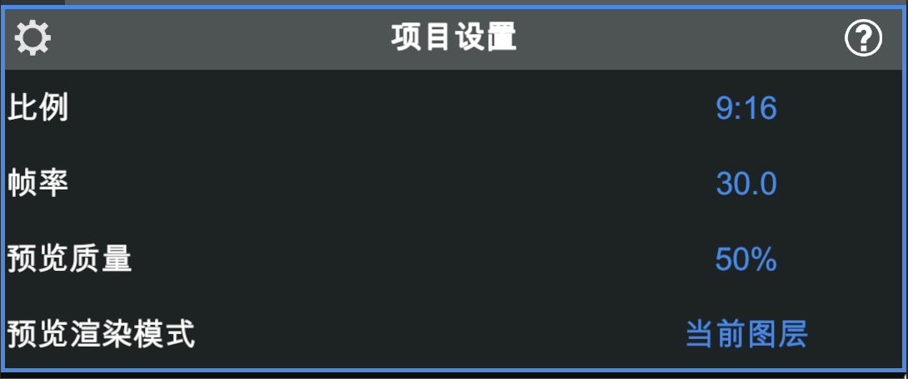
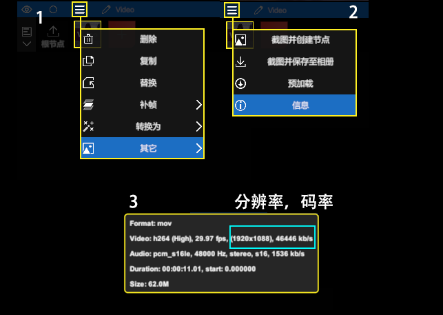

用 NodeVideo 从零剪出第一支视频，跟我走 8 步
NodeVideo 把时间线、属性面板、特效、音频都揉进了手机里。这篇实战教程带你从导入素材到导出成片，踩过三个新手最容易翻车的坑。
跟着这篇教程走完，你能用 NodeVideo 独立剪出一支有画面切换、有背景音乐、能导出到本地的短视频——不管你是安卓还是 iOS，流程完全一致。
准备工作：先把版本和项目设置搞对
去nodevideo官网能看到完整的版本对比——NodeVideo 有三个版本：安卓、iOS、还有电脑版。手机版是主力开发平台，Pro 会员能解锁更多特效和 4K 导出。新手先用免费版跑通流程就行。
从官方下载拿到安装包装好之后，别急着导入素材。先点一下根节点（主时间线），属性面板会切换成项目设置——这里控制的是整个项目的全局参数，很多新手第一次进来直接导入了一堆素材，后来发现比例不对又得重做。
四个关键项：比例按发布平台定（9:16 竖屏发抖音、16:9 横屏发 B 站），帧率预览期设 30 或以下换流畅，导出前再切回 60。预览质量默认 50% 不是画质缩水，是为了让手机能跑得动——预览模糊不等于导出模糊，别慌。每个参数的详细解释去nodevideo文档里能找到。

第一步：导入素材，顺便看一眼素材信息
点「新建图层 → 媒体文件」，把你要剪的视频、图片、音频都导进来。导完之后不要急着往上堆特效——先选中视频图层，点图层菜单 → 其它 → 信息，看一眼素材的分辨率、码率和帧率。
把项目设置匹配成和素材一致，预览会流畅很多。素材是 1080P 你就别把项目设成 4K，项目分辨率高于视频分辨率不会提高画质，白白增加手机负担。

第二步：展开时间线，用剪刀分割片段
默认编辑视图下 NodeVideo 以图层和参数为主角，但真要剪辑必须展开时间线视图——点时间线按钮，完整的时间轴就出来了。
剪刀分割是最常用的操作：把时间指示器拖到你想切的位置，点剪刀图标，当前选中的图层就一分为二。删掉多余段落，或者把不同片段拖到不同时间点上重新排列。官方推荐在根节点上操作，这样所有图层同时可见，调整起来更直观。
第三步：给画面加点东西——特效和属性面板
选中任意图层，属性面板会列出这层所有可调参数。亮度、对比度、饱和度是最基础的调色；往上滑能找到辉光、摇晃、Saber 光效这些进阶特效。每个特效拖进去之后都可以打关键帧，让参数随时间变化。
比如给一段夜空视频加辉光特效，在开头打一个辉光强度 0 的关键帧，再往后拖 2 秒打一个强度 80 的关键帧，播放时就能看到星光渐渐亮起来的效果。
第四步：音频别只放个 BGM
视频的完成度一半在声音。NodeVideo 对音频走的是图层化路线——音频也是图层，可以叠加、裁剪、打关键帧。
点「新建图层 → 媒体文件 → 音频」导入音乐或音效，在时间线上用剪刀把多余段落剪掉。音量参数可以打关键帧做淡入淡出，音频控制面板还有频谱可视化，卡点剪辑时先用频谱定位节拍再切画面，比凭眼睛数帧准多了。
想玩点花活？音频反应器可以让音频驱动视觉参数——比如音乐节奏越强，画面放大越厉害，或者光效跟着节拍闪烁。
第五步：画中画和图层顺序
想在主画面上叠一个小窗口（比如解说露脸、游戏直播画面），就把两个视频图层都放在时间线上，调整它们的位置和大小。上面的图层会盖住下面的，拖图层顺序就能调整前后关系。混合模式和透明度可以让叠放效果更自然，比如把 PNG 透明贴图放在最上层做水印。
第六步：检查卡点一——手机运存扛不住
闪退几乎都发生在「手机运存小 + 项目复杂」的组合下：图层太多、素材分辨率太高、特效堆了一层又一层，内存直接爆。按这个优先级排查：先减图层数量（合并、预渲染、删掉不可见的），再关掉高耗能功能（补帧预览、3D、多层发光），还不行就把导出分辨率降到 720P 或更低。终极方案是转移到电脑端——把工程文件传到 PC 上继续编辑和导出，性能强太多。
第七步：检查卡点二——预览卡顿不是 bug
预览卡顿主要是预览质量和帧率设置太高导致的。把预览质量保持在默认 50%，帧率预览期设 30 或以下，导出前再切回 60。如果还是卡，试试降低预览渲染模式的范围——卡顿时牺牲一点预览范围换流畅是值得的。
第八步：导出成片，完事
时间线拉到开头，点导出按钮。分辨率设成你需要的（720P 或 1080P 足够发社交媒体，Pro 会员能出 4K），帧率和项目设置一致，等进度条走完就能在相册里找到成片了。导出用的是完整质量渲染，预览时的模糊和卡顿不会带到成片里，放心。
进阶：往下还能玩什么
关键帧曲线编辑器、时间重映射、光流补帧这些进阶功能等着解锁——光流补帧能做丝滑慢动作，但参数调不好会出现果冻效应和重复帧，自己多试几次就能摸到感觉。3D 摄像机跟踪、木偶工具这些 Pro 级功能在手机上能用到什么程度，也值得自己摸索。